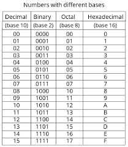

Binary
Also known as the foundation of modern computing, many computers (including early
and modern systems) are based on binary.
Is base-2, comprised of the set of = {0,1}.

The diagram above showcase how to convert a binary number into the other number
systems.
Examples of operations: